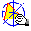

Základní ovládání programu
Program "Výuka geometrie 1.0" napsán jako soubor webovských stránek, takže pro jeho zobrazení a ovládání potøebujete nìkterý z prohlížeèù internetových stránek. Tento prohlížeè musí podporovat zobrazování dokumentù s rámy a vykonávat zdroje napsané v jazyce JavaScript. Pokud máte prohlížeè Internet Explorer, nebo Netscape verze 3.x nebo vyšší, jsou tyto funkce zajištìny.
Pro pohyb v programu jsou urèeny dvì ovládací lišty.
Ve svislé lištì nadepsané OBSAH si mùžete zvolit pøíslušnou kapitolu výkladu, nebo test, který chcete právì provádìt. Kliknutím na název se pøíslušná kapitola, nebo test zobrazí v hlavním oknì programu.
Druhá, vodorovná lišta, obsahuje dvì tlaèítka, pomocí kterých se mùžete pohybovat v programu libovolným smìrem. Tlaèítko "Vpøed" samozøejmì zaène fungovat až tehdy, použijete-li nejprve tlaèítko "Zpìt". Tato tlaèítka jsou obdobou tlaèítek na lištì prohlížeèe a jsou zde pro usnadnìní pohybu programem v zobrazení pøes celou obrazovku. Lišta dále obsahuje tlaèítko "Nápovìda" sloužící k vyvolání nápovìdy ke stránce v hlavním oknì, "Obsah", pro posun na seznam témat v dané kapitole a tlaèítko Download, pomocí kterého si mùžete calý program stáhnout na Váš lokální disk ve formátu ZIP.
Prohlížení dynamických obrázkù

Výklad je hojnì doplòován dynymickými obrázky vytvoøenými v
programu Cabri
geometrie II, který je nutno øádnì
nainstalovat. Potom již staèí ve výkladové
èásti kliknout na symbol a obrázek se spustí v programu Cabri. Zde je
možno manipulovat s jednotlivými jeho èástmi a sledovat a
odvozovat rùzné geometrické zákonitosti a jevy. Pomocí
tìchto ukázek se pro Vás stane geometrie pochopitelnìjší a
zábavnìjší. Pro pohodlnìjší obsluhu programu Cabri si zde
stáhnìte èeský jazykový soubor cesky.cgl
. Pokud nastaly nìjaké potíže se zobrazením ukázek v Cabri, zde jistì naleznete pomoc.
Promítání animací
Tam, kde je tøeba dodržovat urèitý pevnì
stanovený postup, napø. u konstrukcí, jsou do výkladu
zaøazeny ovladatelné animace konstrukcí a
postupù. Celý postup si mùžete spustit jako video kliknutím
na promítaèku  ,
nebo po jednotlivých krocích klapkou
,
nebo po jednotlivých krocích klapkou  vlastním tempem.
vlastním tempem.